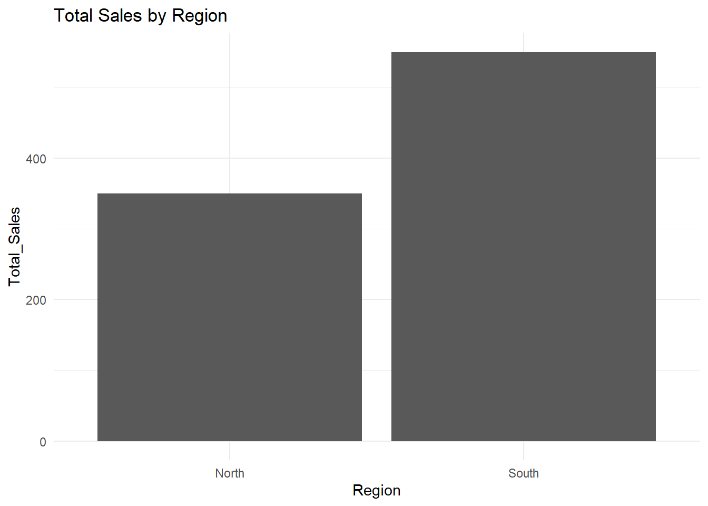

# Install and load packages
# install.packages("dplyr")
# install.packages("data.table")
library(dplyr)
library(data.table)Introduction
Combining rows with the same column values is a fundamental task in data analysis and manipulation, especially when handling large datasets. This guide is tailored for beginner R programmers looking to efficiently merge rows using Base R, the dplyr package, and the data.table package. By the end of this guide, you will be able to seamlessly aggregate data in R, enhancing your data analysis capabilities.
Understanding the Need for Combining Rows
Combining rows with identical column values can simplify data, reduce redundancy, and prepare datasets for further analysis. Common scenarios include:
- Summarizing sales data by region.
- Aggregating survey responses by demographic groups.
- Combining financial transactions by account.
Setting Up Your Environment
Before diving into the methods, ensure your environment is ready:
- Load Necessary Libraries: Using
dplyranddata.tableenhances base R functionalities.
Combining Rows in Base R
Base R provides the aggregate() function to combine rows. This function applies a specified function (e.g., sum, mean) to the data grouped by one or more columns.
# Example using aggregate
df <- data.frame(Group = c("A", "A", "B", "B"),
Value1 = c(10, 20, 30, 40),
Value2 = c(1, 2, 3, 4))
result <- aggregate(cbind(Value1, Value2) ~ Group, data = df, FUN = sum)
print(result) Group Value1 Value2
1 A 30 3
2 B 70 7Combining Rows with dplyr
dplyr is known for its user-friendly syntax, making data manipulation intuitive. Use group_by() to define the grouping columns and summarise() to apply functions to each group.
# Using dplyr
result <- df |>
group_by(Group) |>
summarise(across(c(Value1, Value2), sum))
print(result)# A tibble: 2 × 3
Group Value1 Value2
<chr> <dbl> <dbl>
1 A 30 3
2 B 70 7Combining Rows with data.table
data.table is optimized for speed and is particularly useful for large datasets. Use the by argument to specify grouping and .SD to apply functions.
# Using data.table
dt <- as.data.table(df)
result <- dt[, lapply(.SD, sum), by = Group]
print(result) Group Value1 Value2
<char> <num> <num>
1: A 30 3
2: B 70 7Comparing Methods
- Performance Considerations:
data.tableoften outperforms in speed, especially with large datasets. - Ease of Use and Readability:
dplyris more readable and easier for beginners.
Practical Example: Combining Sales Data
Imagine you have a sales dataset and want to combine sales by region. Here’s how to implement it:
Base R
# Sample sales data
sales_data <- data.frame(Region = c("North", "North", "South", "South"),
Sales = c(200, 150, 300, 250))
combined_sales <- aggregate(Sales ~ Region, data = sales_data, FUN = sum)
print(combined_sales) Region Sales
1 North 350
2 South 550dplyr
combined_sales <- sales_data |>
group_by(Region) |>
summarise(Total_Sales = sum(Sales))
print(combined_sales)# A tibble: 2 × 2
Region Total_Sales
<chr> <dbl>
1 North 350
2 South 550data.table
sales_dt <- as.data.table(sales_data)
combined_sales <- sales_dt[, .(Total_Sales = sum(Sales)), by = Region]
print(combined_sales) Region Total_Sales
<char> <num>
1: North 350
2: South 550Handling NA Values
Handling missing data is crucial. Each method has strategies to deal with NA values:
- Base R: Use
na.rm=TRUEin functions likesum(). - dplyr: Use
na.rm=TRUEwithinsummarise(). - data.table: Handle NAs similarly within lapply.
Advanced Techniques
- Custom Functions: You can apply custom functions within
summarise()for more complex aggregations. - Combining Multiple Columns: Use
across()indplyrto apply functions across multiple columns.
Visualizing Combined Data
Visualizations can provide insights into your combined data. Use ggplot2 for effective data visualization.
library(ggplot2)
ggplot(combined_sales, aes(x = Region, y = Total_Sales)) +
geom_bar(stat = "identity") +
theme_minimal() +
labs(title = "Total Sales by Region")
Common Pitfalls and Troubleshooting
- Missing Libraries: Ensure all necessary packages are installed and loaded.
- Data Types: Check that your data types are compatible with the functions used.
Best Practices
- Write Clean Code: Use consistent naming conventions and comment your code.
- Document Your Work: Keep track of your data manipulation steps for reproducibility.
FAQs
How to handle large datasets? Use
data.tablefor its efficiency with large datasets.What if my data is not in a data frame? Convert your data to a data frame using
as.data.frame().Can I combine rows based on multiple columns? Yes, specify multiple columns in
group_by()orby.How do I handle duplicate column names? Use unique column names or rename them before combining.
Is it possible to undo a combine operation? You can maintain the original dataset separately or use joins to reverse the operation.
Conclusion
Combining rows with the same column values is a fundamental skill in R data analysis. By mastering Base R, dplyr, and data.table, you can efficiently manipulate and analyze your datasets. Practice these techniques with various datasets to enhance your proficiency and confidence.
Your Turn!
Please share your feedback on this guide and feel free to share it with others who might find it useful! Your insights are valuable in improving our resources. I also want to hear about your own experiences with combining rows in R.
References
- Statology: How to Combine Rows with Same Column Values in R
- R-bloggers: Combine Rows with Same Column Values in R
- GeeksforGeeks: How to merge data in R using R merge, dplyr, or data.table
I hope this comprehensive guide provides beginner R programmers, and any of you looking to expand your skills with the tools and knowledge to effectively combine rows with the same column values, enhancing data analysis and manipulation skills.
Happy Coding! 🚀